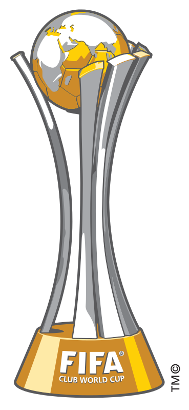

Le Real Madrid est un club professionnel espagnol de football, basé à Madrid. Le club a été créer le 6 Mars en 1902 par Julián Palacios et les frères Juan et Carlos Padrós. Le nom complet du club est le Real Madrid Club de Futbol. Le championnat du Real Madrid est « LaLiga Santander ». Le président se nomme Florentino Pérez. L’entraîneur actuel se nomme Carlo Ancelotti. Vainqueur de très nombreux titres nationaux et internationaux, il a reçu de la Fédération internationale de football association (FIFA) le titre honorifique de plus grand club du XXe siècle. Le Real Madrid s'impose au sommet du football européen au milieu des années 1950, en remportant notamment les cinq premières éditions de la Coupe d'Europe des clubs champions. Dans les années 1980, le club possède à nouveau l'une des meilleures équipes d'Europe, surnommée La Quinta del Buitre (« la bande du vautour »), qui remporte notamment deux fois consécutivement la Coupe de l'UEFA. Le Real Madrid renoue au début des années 2000 avec sa politique de recruter les meilleurs joueurs du monde, ce qui vaut à son équipe le surnom de « Galactiques ».
À domicile, le club évolue habituellement tout en blanc, ce qui lui vaut le surnom de los Blancos (« les blancs »).
En 2021, le club compte notamment à son palmarès 34 titres de champion d'Espagne, 13 victoires en Ligue des champions et 4 sacres en Coupe du monde des clubs, trois records en la matière.
Le stade Santiago Bernabéu est un stade de football situé à Madrid, Espagne. Inauguré le 14 décembre 1947 et propriété du Real Madrid, sa capacité est depuis 2006 de 81 044 spectateurs. Il se trouve au cœur de la capitale espagnole